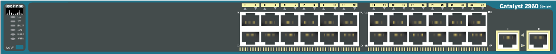

| Property | Value |
|---|
Switch> enable Switch# configure terminal Switch(config)# hostname SW1 SW1(config)# enable secret cisco SW1(config)# banner motd #Authorized Access Only# SW1(config)# service password-encryption SW1(config)# no ip domain-lookup
SW1(config)# vlan 10 SW1(config-vlan)# name Sales SW1(config-vlan)# exit SW1(config)# interface fa0/1 SW1(config-if)# switchport mode access SW1(config-if)# switchport access vlan 10 SW1(config-if)# exit SW1(config)# interface gi0/1 SW1(config-if)# switchport mode trunk SW1(config-if)# switchport trunk allowed vlan 1,10,20
Router> enable Router# conf t Router(config)# interface g0/0/0 Router(config-if)# ip address 192.168.1.1 255.255.255.0 Router(config-if)# no shutdown Router(config-if)# exit Router(config)# ip dhcp pool LAN1 Router(dhcp-config)# network 192.168.1.0 255.255.255.0 Router(dhcp-config)# default-router 192.168.1.1 Router(dhcp-config)# dns-server 8.8.8.8
show running-config (أو sh run) show vlan brief (أو sh vlan br) show ip interface brief (أو sh ip int br) show interfaces trunk (أو sh int trunk) show interfaces status (أو sh int status) show mac address-table (أو sh mac-address-table) show ip route (جدول التوجيه) show cdp neighbors (الأجهزة المجاورة) show spanning-tree (حالة بروتوكول STP) copy run start (أو wr لحفظ الإعدادات)
تم فحص جميع الأجهزة والمنافذ والتأكد من خلوها من التعارضات.
| اسم الشبكة (Subnet Name) | عدد الأجهزة المطلوبة (Needed Hosts) | إجراء |
|---|---|---|
| Subnet Name | Needed | Allocated | Network ID | Subnet Mask | Usable IP Range | Broadcast | Wildcard |
|---|---|---|---|---|---|---|---|
| اضغط "حساب تقسيم الـ VLSM" لتوليد الجدول. | |||||||
| No. | Time | Source | Destination | Protocol | Length | Info |
|---|---|---|---|---|---|---|
| No packets captured yet. Send a Ping envelope ✉️ or run ping from CLI to capture packets! | ||||||
Select a packet above to view hex dump.
تهانينا! لقد أتممت بنجاح جميع متطلبات التكوين المعتمدة في منهج Cisco CCNA.
| Device | Model | Interface | IP Address | Subnet Mask | Default Gateway | VLAN | Status |
|---|
يمكنك هنا نسخ عملك الحالي بالكامل (أو الأجهزة المحددة فقط مع توصيلاتها وإعداداتها) ككود جاهز، أو لصق أي عمل جاهز لديك لإضافته إلى مساحة العمل الحالية أو استبدالها: